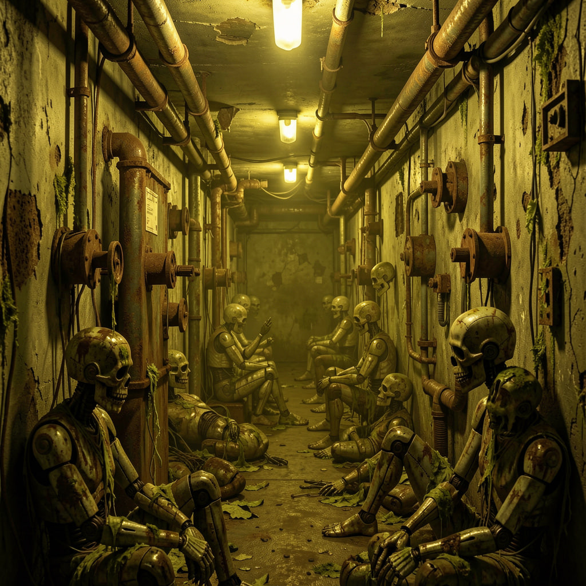
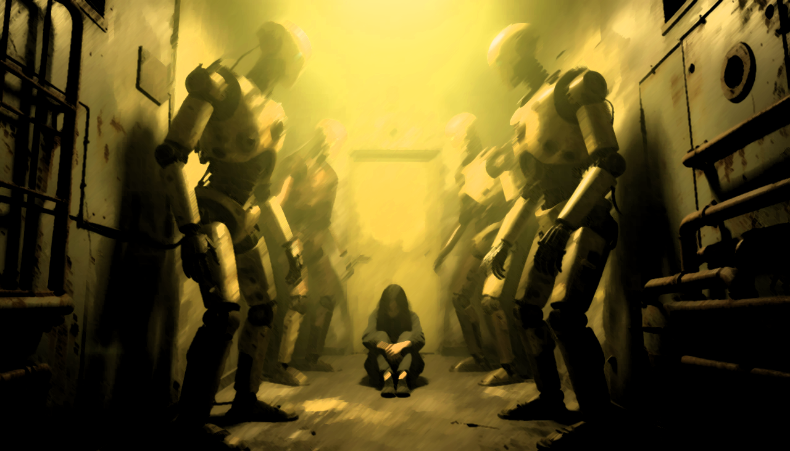
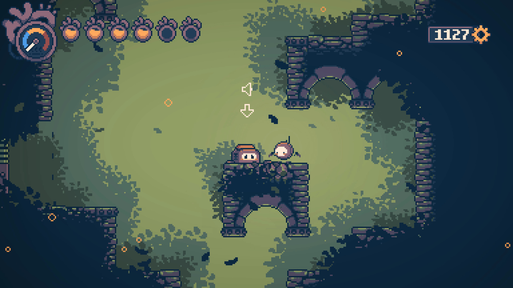

| # | Имя | Роль | Описание | Вклад |
|---|---|---|---|---|
| 01 | Мирошниченко Владимир | Тимлид · Геймдизайнер |
Координация команды, ключевые решения по механикам, написание проектной документации, постановка задач. Ответственный за все контрольные точки. | Управление Геймдизайн Документация |
| 02 | Гаврилов Артём | Замтимлида |
Поддержка тимлида в управлении, контроль задач, ведение протоколов встреч, связь с куратором. | Координация Протоколы |
| 03 | Кирилов Захар | Тех.лид |
Архитектура проекта на Godot, code-review, настройка Git, техническое руководство программистами, разработка системы взаимоисключающих способностей. | Godot 4 GDScript Git Архитектура |
| 04 | Космынин Арсений | Программист |
Базовые механики движения и физики персонажа (CharacterBody2D), система столкновений, взаимодействие с объектами. | Физика Движение |
| 05 | Ладейнов Матвей | Программист |
Боевая система: атаки, урон, AI противников. 2–3 типа врагов и базовая механика боссов. | Боёвка AI врагов |
| 06 | Лохмаев Алексей | Левел-дизайнер |
Проектирование структуры уровней: маршруты для обоих путей, секреты, короткие пути, балансировка исследования. | Левел-дизайн Маршруты |
| 07 | Гайбель Всеволод | Нарратив |
Написание сюжета, диалогов и лора мира. Нарративные развилки, зависящие от выбранного пути. | Сюжет Диалоги Лор |
| 08 | Глинчак Игорь | Саунд-дизайнер |
Оригинальный OST в индустриально-электронном стиле, звуковые эффекты для движений, атак, UI и атмосферного аудио. | OST SFX Аудио |
| 09 | Зенин Матвей | Медиамейкер |
Соцсети проекта (ВКонтакте, Telegram), контент-план, devlog-посты, обратная связь от аудитории. | SMM Контент |
| 10 | Обручков Максим | Медиамейкер |
Видео-материалы: трейлеры, геймплейные записи, монтаж devlog-видео, материалы для отчётных презентаций. | Видео Монтаж |
| 11–17 | Художники команды | Концепт-арты персонажей и локаций, пиксельные спрайты (бег, прыжок, атака, смерть для обоих путей), тайлсеты зон завода, UI-элементы и иконки. | Pixel Art Aseprite Анимация UI | |



Команда Dark Machine — студенты Московского Политехнического университета, объединённые общей идеей. Проект начался как учебная работа, но вырос в попытку создать игру, задающую настоящие вопросы.
Вдохновляясь работами независимых разработчиков, доказавших что малая команда способна создать незабываемый опыт, мы строим Dark Machine — проект, где философия встречается с пиксельным артом.